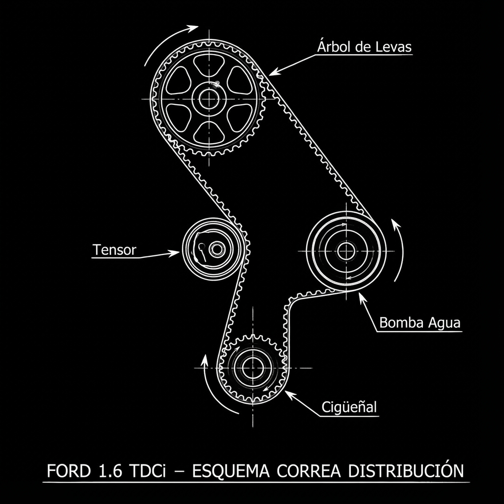

0. Esquema Visual de Calado

Puntos Claros de Sincronización:
- Arbol de Levas: Orificio de bloqueo a las ~11:00 (Pasador 8mm).
- Cigüeñal: Orificio de bloqueo en volante motor o tras motor de arranque.
- Tensor: Alinear índice móvil con la muesca fija.
1. Preparación y Seguridad
¡Ojo! Dibuja el sentido de giro de la correa accesoria si vas a reutilizarla.
2. Sincronización (PMS)
3. Colocar Útiles
¡Ojo! Asegúrate de que los útiles entran suavemente. No fuerces. El motor debe
estar INMÓVIL.
4. Desmontar Correa
5. Montaje
¡Ojo! Mantén la correa tensa en el lado opuesto al tensor.
6. Comprobaciones Finales
¡MUY IMPORTANTE! Si intentas girar el motor con los útiles puestos, romperás algo
grave.
Datos Técnicos (Pares de Apriete)
- 🔧 Tornillo Cigüeñal: 30 Nm + 180° (¡Nuevo!)
- 🔧 Tuerca Tensor: 25-30 Nm
- 🔧 Rodillo Guía: 35-37 Nm
- 🔧 Bomba de Agua: 10 Nm
- 🔧 Tornillos Polea Árbol Levas: 43 Nm (si se aflojan)
- 🔧 Tornillos Carcasas Plástico: 5-7 Nm